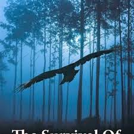
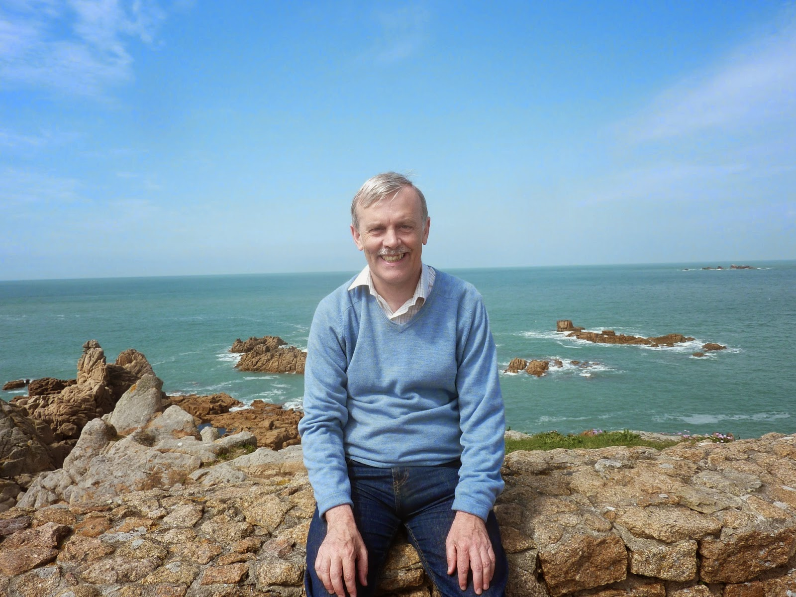
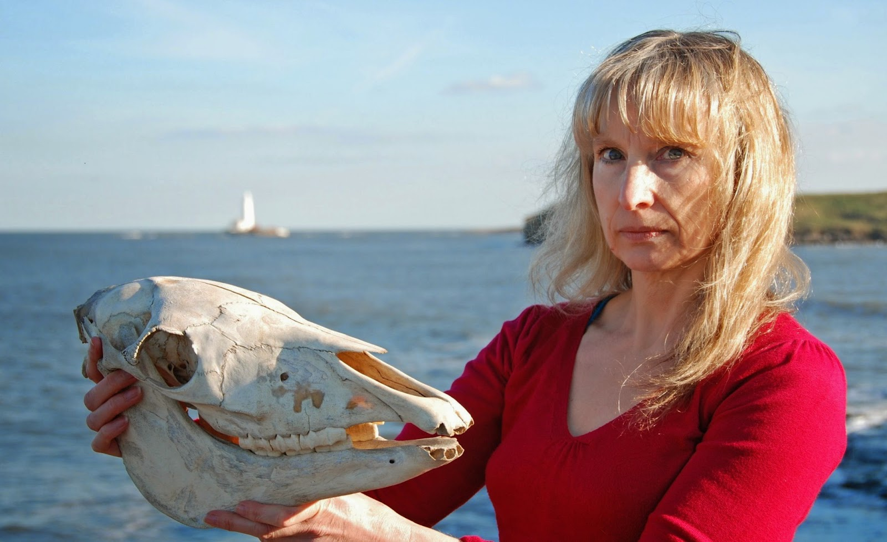
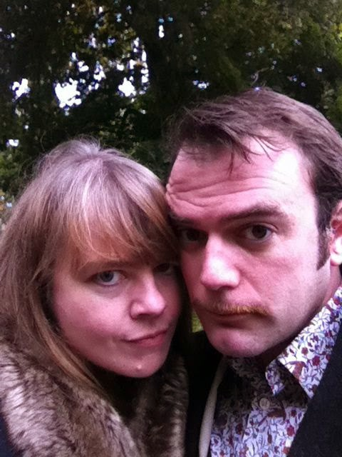
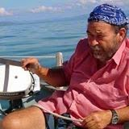

 |
| Photographs of John AA Logan don't exactly litter the internet |
{kind=link}
I'm surprised to find myself having a go at this 'blog hop' challenge – but I was even more surprised (and rather delighted) when John AA Logan invited me to try.
John's a fellow Authors Electric member but I've never met him and I
don't feel that I really 'know' him in the social media world. There are some AE
members (and Facebook friends) who I forget that I haven't physically met. They're so much part of my on-line life that I assume that we
would instantly get chatting about 1001 things if we should discover ourselves sharing a cup of coffee or a glass of
wine. But not John.
That's merely a recording of my impression: it's not a criticism or a judgement. Agatha Christie once said about Margery Allingham "If I say I don't at all know what she was like that is the truth and that makes her interesting to me." My impression is that (in the hackneyed phrase) John is a 'private person'. From his general
comments and his blog posts he seems to have a great depth of
knowledge of films, philosophy and books that are not in my regular
comfort zone. He also appears to be utterly single-minded in his
determination to dedicate himself to his writing and make it the BEST
that it can. Yes, and so do we all but, in my life, the writing appears to
be fighting a battle for inclusion whereas John appears to have
organised his days round 500 words "islands" of writing, thus allowing plenty of
time for the subconscious to do its essential informing and
structuring. I've read his varied and poetic collection of short stories, Storm Damage and his extraordinary crime novel The Survival of Thomas
Ford. The quality of perception and the use of language in both books
confirm, eloquently, that John's method works.
I envied his answers
to these #HowIWrite questions.
1) What am I writing? Another sailing
adventure story in the Strong Winds series. It poses a different set of
problems to its predecessors and is currently stuck, poised, quivering, before the
last, crucial 4 – 5 chapters. I find I can't talk about my books
until they're done – too fragile, poor little blossoms! – so
that's that question struck off.
2) How does my work differ from others
of its genre? With all due respect (actually I'm not sure much
respect is due) this is a thoroughly uninspiring question. Margery Allingham,
for instance, spent the most important parts of her working life
enclosed in what she described as the mystery 'box', yet every book that she produced was different in some way from its predecessor and from
the work of her contemporaries. If this were not so there would be no
point at all in writing. 'Well, there's the little matter of earning a
living,' I hear you object. Mmm, but to earn a living, even at the currently plummeting writers' rates, you need to attract readers and even the least adventurous reader
wants something subtly different in a new book – otherwise why buy it?
There's plenty of cost-free pleasure to be had in re-reading. Margery's
father, Herbert Allingham who wrote 'formula fiction' at a set rate per 1000 words knew
that he had to play with the formula if he was to please his
audience. I hope that I am producing my own variations on the sailing
adventure genre (if such a thing exists).
3) Why do I write what I do? When I go
into schools and spend a day helping
children to write stories I tell them sincerely that their only job
is to write something to please themselves. Not me, not their
teacher, not even their best friend. They are their own most
important readers. And that's my answer to this question. The inside
of my head is such a muddle with the daily mass of impressions,
ideas, duties, joys and griefs that if I can succeed in writing
something clearly and precisely to please myself, then I'm going to
feel calmer and better. If it then manages to communicate to someone
else as well, that is the most glorious unexpected gift I can be
given. Thank you to those who have given it.
4) How does your writing process work?
Currently mine isn't working but I hope that's only temporary.
Sometimes the work/life balance topples the wrong way. I know that what I
need to finish this current book is time on Peter Duck, time by a river and then much more time up in my attic with no phone, no internet and no one
niggling around inside my head pleading that they need me more than I
don't need them. Because we do, all of us, need one another
and I hope that's one of the aspects that my books try to express.
Now I'd like to introduce you to four
writers whose books I admire and who take a truly professional
approach to their work. If they choose to answer these #HowIWrite
questions either on AE or on their blogs elsewhere I'm certain that their
answers will be varied and interesting.
| What lovely books he's holding |
{kind=link}
I'll begin with the person I've met
most recently. Martin Edwards won the Margery Allingham short story
competition and I met him in person at this year's Crimefest. We'd
been in contact before as we share a taste for crime fiction of an old-fashioned variety and I
enjoy his blog Do You Write Under Your Own Name? Martin says that he always knew
he wanted to write but was persuaded by his parents that he needed a
'proper job' and so he became a lawyer. Not such a bad idea as it's given
him thirty years of authentic experience of people in stressful
situations.
Martin began penning legal text books and his writerly longings soon led to his first series of detective novels
featuring the Liverpool lawyer Harry Devlin. These are currently
being reissued on Kindle and I look forward to them. Meanwhile I have
been following Martin's Lakeland series which begins with The Coffin
Trail. The Frozen Shroud (#6 in the series) is temptingly close to the top of my TBR
pile and I'm tagging Martin in this post as I'd like to know how he's managed to
combine his practice as a lawyer + plenty of non-fiction writing +
short stories & anthologies + 16 novels of reliably consistent
quality.
 |
| Martin's now a legal 'consultant' - wise man |
{kind=link}
I also met Valerie Laws at Crimefest
but she was one of the people that I had to remind myself that I
didn't know already. As a fellow AE member she needs no introduction on this blog but I thought I would indulge myself with a little
bit of formal bio as I'm so amazed by Valerie's versatility that I
don't want to risk missing any of the achievements.
Valerie
Laws (www.valerielaws.com)
is a crime novelist, poet, playwright and sci-art installation
specialist. Of her thirteen published books, 4 are currently
available as ebooks. A mathematics/physics graduate,
she devises new poetic forms and science-themed poetry
installations and commissions including the infamous Arts
Council–funded Quantum
Sheep, spray-painting
haiku onto live sheep to celebrate quantum theory. Much
of her recent work arises from funded residencies with
pathologists, neuroscientists, human specimens and
dissections. Another quantum haiku on inflated beachballs
in Hackney Lido featured in BBC2’s Why
Poetry Matters with
Griff Rhys Jones, and
live at Royal Festival Hall, London, and her installations have
toured all over Europe. She performs worldwide live and in the
media. Her many prizes and awards include a Wellcome Trust Arts
Award and two Northern Writers’ Awards. She is disabled
and lives on the North East coast of England.
 |
| She 'saw the skull beneath the skin' Valerie's first crime novel was The Rotting Spot |
{kind=link}
Valerie's
second crime novel, The Operator, is currently grabb-able at W H
Smith for your holiday reading but I'd also recommend the brilliantly
funny and clever Lydia Bennett’s Blog (only on Kindle which is an
opportunity missed by the paper publishing world). I admire her
poetry collection All That Lives and when I asked Valerie which of
all her books she'd take if she were banished to a desert island, she said that it
would probably be poetry. I'm tagging Valerie as I'd like to hear how
she decides which form of writing (or other creative activity) she will be focusing on at any one
time. Valerie was left disabled after an accident and I wonder what
impact this has had on her writing themes and choices.
 |
| Robertson & Palmer Such a sweet young couple |
{kind=link}
My
friend Imogen Robertson is also a poet and used to be a children's
TV, film and radio director. Then she won the Daily Telegraph First
Thousand Words competition for the beginning of Instruments of
Darkness, her first Crowther & Westermann historical crime novel. Now
she's on title #5 Theft of Life and has also written a wonderful stand-alone
novel, The Paris Winter.
Imogen, too, was at Crimefest so I trotted
along to the relevant panel to hear her talking about
the subtle skills of balancing high quality research – usually
using primary sources – with the accessibility required to attract
sufficient readers in the UK, US (and beyond) to eat, live and pay
the mortgage. The session was okay – but insufficient. Imogen has
always seemed to me to be particularly good at analysing her craft
and I wanted to hear more. One of the technical aspects I especially admire in her Crowther& Westermann novels is the creation of a distinctive idiom which is neither late c18th or early c21st but which succesfully conveys a period flavour whilst also being readable, flexible and able to express the full range of emotion and character variation. I'd like to know how she does that. I suppose I could take the easy option and
lure her and her husband Ned Palmer down to Peter Duck (owned by
Ned's family for a significant period - which may possibly be why I had to kill off his namesake in the prologue of The Salt-Stained Book) but then there's always the
danger that we might sit around the cockpit enjoying Ned's beer and
cheese expertise and I might forget to record Imogen's writerly wisdom.
 |
| The career journalist & writer first story published at 16 first class degree from Manchester University |
{kind=link}
Now, whether I'll get Jan Needle to
divulge the secrets of his art is another matter altogether. Jan, if
I may say so without belittling my other guests, has almost certainly
poured more words into the world that any of us yet he manages to
present the persona of someone far more interested in listening to
folk music and tinkering with complex marine engines. "Oh yes," he'll say a week or so after explaining that he's not
been within reach of the internet as he's been shifting a canal boat,
visiting his extensive family or camping out in the wild woods with a
group of anti-frackers, "well the thing is I had to deliver the latest novel in my Young Nelson series so I did that, visited 3 or 4 of my children and then I wrote my monthly blog in
the car on my way to a great aunt's funeral." (None of that is
exactly true but let this photo give you the public image of the man
then glance back to the profile I wrote quite recently for AE. Jan's achievement is impressive.)
Meanwhile of
course I recommend that you read Wild Wood (Jan's masterpiece?) but I must also say how much I enjoyed his Treasure Island
re-make Silver and Blood. Occasionally Jan's adult novels are slightly too robust for my lily-livered tastes and I was intrigued by his
decision to withdraw and tone down his prison novel Kicking Off which
I had read with only minimal blenching. It's a
passionate book about an important and difficult subject. A long
term favourite of mine is My Mate Shofiq, a classic children's novel
which has now acquired an intriguing patina of social history.
Albeson and the Germans, an early novel about a child vandal, is painful, touching and ultimately kind. Oddly enough I think I could apply those words also to Jan's more
recent (and controversial) Killing Time at Catterick. How does he do it - and why?
So here, gentle readers, are four more
writers who may in the future be persuaded to tell us #HowIWrite. Meanwhile we have
their generous assortments of books and the inspiring example of the dedicated John AA Logan. I'd better get back to my attic now -- or possibly down to the boat.